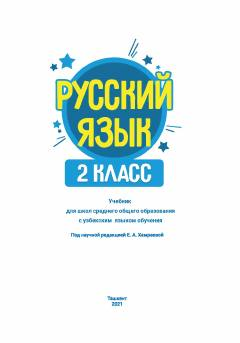

РЯO'zbek maktablarining 2-sinfi uchun rus tili darsligi.
Mazkur darslik o'zbek tilida o'qitiladigan umumiy o'rta ta'lim maktablarining 2-sinf o'quvchilari uchun rus tilini chet tili sifatida o'rganishga mo'ljallangan. Qo'llanmada nutqiy faoliyatning barcha turlari bo'yicha tizimli ishlar olib borilib, o'yin materiallari va audiomateriallar uchun QR-kodlar kiritilgan. Kitob A1.1 bolalar darajasidagi sertifikat talablariga muvofiq ishlab chiqilgan.